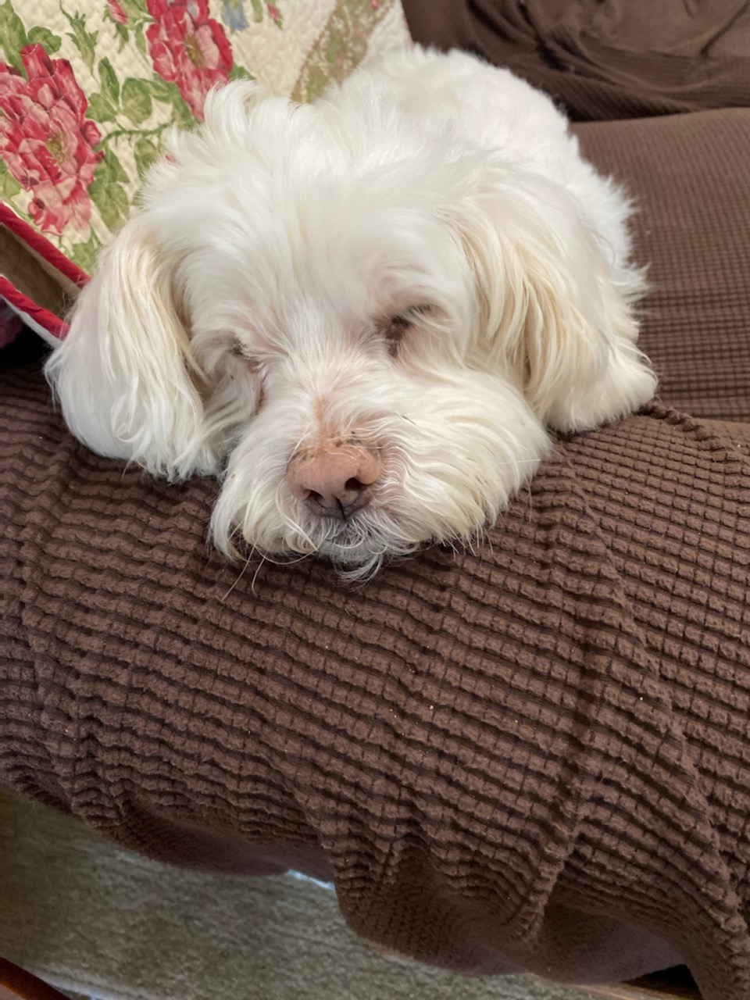

My mother made one of these for everyone in my
family last Christmas to remember our dog who had passed
away 2 months prior.
My dog, Faye, looking at my drone riding on a
Roomba like cats do.
An image of my dog, Faye.
Another image of my dog.
Another image of my dog.

Another image of my dog.
Another image of my dog.
My cousins' dog, Sunny, a puppy at the time, comically
sitting on top of their other older dog, Shadow.
My cousins' dog, Sunny, sitting at the steering
wheel of a car, as if she were about to drive.
RC Planes
One of my RC planes, the day I got it.
An example of a major part of the hobby -
crashes. The plane ran out of battery and barely made it
to the runway, landing on the edge of it, catching the
landing gear, and shearing it off seamlessly. The
landing gear can be seen on the other side of the center
line, near the top of the image.
A $16k RC jet with real jet engines. It belongs
to another member of the club.
A neat, old RC plane with cool lights installed.
It looks amazing in the dark.
Drone and Aviation
My commercial drone pilot license. Pay no
attention to the man in the background.
A photo I took of Downtown Tulsa near Atlas
School at dusk using my drone. This photo was taken
only a few days before the drone malfunctioned and
crashed.
A jet-powered fire truck shooting fire out of
its jet engine. I saw this at an airshow I went to
featuring the Blue Angels.
A picture I took of the Blue Angels at one of
their airshows.
Another picture I took of the Blue Angels at one
of
their airshows.
Yet another picture I took of the Blue Angels at
one
of their airshows.
One last picture I took of the Blue Angels at
one of
their airshows.
IT Stuff
An example of some of the fun we had in Mobile
App Development at Tulsa Tech. Nobody noticed the
"spontaneous combustion" answer, which turned out to be
correct. Our instructor later tried this trick on us
again, with "nuclear winter" being the right answer, but
nobody fell for it that time.
I accidentally broke my operating system without
crashing it.
Windows does some strange stuff when it's
struggling this bad.
My accomplishment of shoveling out the number
"404" in the ice and snow in my driveway. Error 404: car
not found.
I once spent an entire day with my IDE font set
to Standard Galactic Alphabet (Minecraft enchanting
table language).
RC Plane Videos
Modified RC plane doing a cool trick. It was
modified to have a second wing, which has actually made
it a lot more agile.
Sometimes at the airfield, we have some combat.
This is when a bunch of people take out their combat
planes and try to knock eachother out of the sky. These
planes are very durable, and they are usually easy and
cheap to repair.
A really cool RC plane doing tricks. It's not
my plane.
An RC jet doing a low speed flyby.
An RC jet doing a high speed flyby with a radar
gun measuring its speed at a whopping 177 MPH.